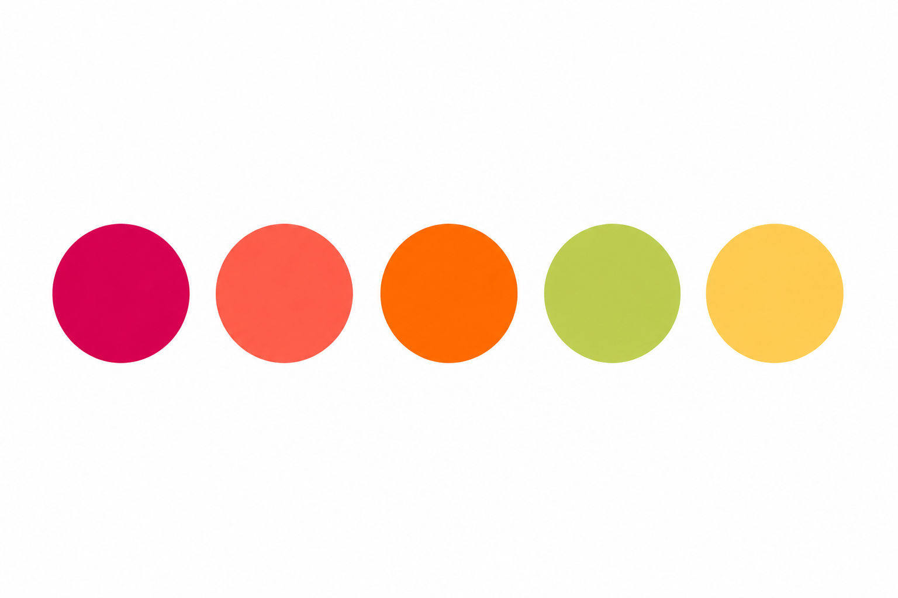

À proximité
L’Auberge 91530
1 route de Vaugrigneuse
91530 Le Val-Saint-Germain
Samedi 5 juin 2027
Vaugrigneuse · Île-de-France

Après quelques années, deux enfants, nous avons décidé de nous marier. Et cette fois, nous avons besoin de vous pour célébrer ça avec nous sous les couleurs d'un couché de soleil tropical ♡
RSVP
Afin de nous permettre d'organiser cette journée au mieux, merci de nous confirmer votre présence avant le 5 mars 2027.
Répondez avant le 5 mars 2027
Et petit rappel : après cette date, les mariés risquent de commencer à paniquer. 😅
DRESSCODE
Pour accompagner l'ambiance de notre journée, nous vous invitons à jouer le jeu avec nous. En total look ou par petite touche, faites-vous plaisir !

Vous venez de loin et souhaitez profiter pleinement de la soirée sans vous soucier du trajet retour ? Nous avons sélectionné quelques jolies adresses à proximité du Château de Vaugrigneuse. Si vous comptez passer la nuit sur place, nous vous conseillons de réserver votre chambre dès que possible tant qu’il y a encore de la dispo.
1 route de Vaugrigneuse
91530 Le Val-Saint-Germain
87 rue du Pont-Rué
91410 Saint-Cyr-sous-Dourdan
1 rue du Pont-Rué
91410 Saint-Cyr-sous-Dourdan